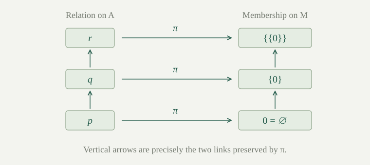

Suppose points are linked by a relation \(R\), with \(b\,R\,a\) meaning that \(b\) is a predecessor of \(a\). Can we replace each point by a set so that these links become exactly membership links? The Mostowski collapse answers yes when the relation is well-founded and different points have different predecessor sets.
Throughout, the carrier \(A\) and relation \(R\subseteq A\times A\) are sets. We work in ZF without assuming Choice, using well-founded induction, Replacement, and transitive sets. We develop recursion on \(R\) locally; \(R\) need not be a well-order, a partial order, or even a transitive relation.
Write \(\operatorname{pred}_R(a)=\{b\in A:b\,R\,a\}\). The relation is well-founded if every nonempty subset \(B\subseteq A\) has an \(R\)-minimal point: some \(a\in B\) with no \(b\in B\) satisfying \(b\,R\,a\). It is extensional if
Well-foundedness supports induction from predecessors. Extensionality says that predecessor sets distinguish the points. For membership on a transitive set, Foundation gives well-foundedness and Extensionality gives the second property, since all members of every point lie in the carrier.
The empty carrier satisfies both conditions. A finite relation with no directed cycles is well-founded: if a nonempty subset had no minimal point, repeatedly following a predecessor within it for more steps than its finite size would repeat a point and produce a cycle. This finite argument needs no infinite sequence of choices.
A subset \(D\subseteq A\) is downward closed under \(R\) if \(a\in D\) implies \(\operatorname{pred}_R(a)\subseteq D\). For each \(a\in A\), let \(D_a\) be the intersection of all downward-closed subsets containing \(a\). This is a set: the family is a nonempty subfamily of \(\mathcal P(A)\), since it contains \(A\) itself.
Intersections of downward-closed sets are downward closed. Thus \(D_a\) is the smallest such domain containing \(a\). If \(a\in D\) and \(D\) is downward closed, then \(D_a\subseteq D\). These domains let us collect uniquely specified local solutions instead of choosing arbitrary partial solutions.
Let \(R\) be well-founded on the set \(A\). Suppose a formula with fixed set parameters specifies exactly one set \(H(a,h)\) for each \(a\in A\) and each set function \(h\) with domain \(\operatorname{pred}_R(a)\). There is a unique set function \(F\) on \(A\) such that
No fixed set containing all possible outputs is assumed. The rule reads the function on the immediate predecessors, not just the unordered collection of its values.
Proof
Call a function good if its domain is a downward-closed subset of \(A\) and it obeys \eqref{eq:relation-recursion} there. Any two good functions agree on the intersection of their domains. Otherwise the set of disagreements has an \(R\)-minimal point \(a\). Every predecessor of \(a\) belongs to both domains and is an agreement point. The two input functions to \(H\) are therefore equal, forcing agreement at \(a\) too.
We prove by well-founded induction that each \(a\in A\) belongs to the domain of a good function. Suppose this is true for all \(b\,R\,a\). A good function containing \(b\) restricts to a good function on \(D_b\), and compatibility makes this restriction unique. Denote it \(g_b\). Replacement collects the uniquely specified graphs \(g_b\) as \(b\) ranges over \(\operatorname{pred}_R(a)\).
Their union \(g\) is a good function, since the graphs agree on overlaps. Its domain \(D\) is downward closed and includes all predecessors of \(a\). If \(a\in D\), it already gives the desired local solution. Otherwise extend it by the value \(H(a,g\mathbin{\upharpoonright}\operatorname{pred}_R(a))\). The enlarged domain \(D\cup\{a\}\) is downward closed. No old point has \(a\) as a predecessor, since downward closure would then force \(a\in D\); thus none of the old equations changes. This is a good function containing \(a\), completing the induction.
Now the unique good function on \(D_a\) exists for every \(a\in A\). Replacement collects all these graphs, and their compatible union has domain \(A\) and satisfies the rule. Compatibility proves uniqueness. For \(A=\varnothing\), this union is the empty function. □
The use of Replacement is essential to this argument: uniqueness lets us collect one local function for each index without invoking Choice. The theorem extends fixed-value recursion on well-orders in both its relation and its possible outputs.
For a well-founded relation \(R\) on \(A\), define the collapse map \(\pi\) by
Apply with \(H(a,h)=\operatorname{ran}(h)\). The output is a set for every allowed history, so \(\pi\) exists uniquely as a set function on \(A\). Its image \(M=\{\pi(a):a\in A\}\) is a set by Replacement. We regard \(\pi\) as a surjection \(A\to M\).
A point with no predecessors becomes \(\varnothing\). If its only predecessor has already become \(\varnothing\), it becomes \(\{\varnothing\}\). This rule exists even when \(R\) is not extensional; in that case distinct points may collapse to the same set.
The set \(M\) is transitive, and \(b\,R\,a\) implies \(\pi(b)\in\pi(a)\).
Proof
The implication follows directly from \eqref{eq:collapse}. For transitivity, if \(u\in v\in M\), write \(v=\pi(a)\). The same equation supplies \(b\,R\,a\) with \(u=\pi(b)\), so \(u\in M\). Thus every member of every element of \(M\) lies in \(M\). □
Reflection of a link needs more: from \(\pi(b)\in\pi(a)\) we get some predecessor \(c\,R\,a\) with \(\pi(c)=\pi(b)\). We may conclude \(c=b\) only after proving injectivity.
If \(R\) is also extensional, then \(\pi\) is injective.
Proof
Use well-founded induction on \(a\) to prove the statement \(P(a)\): for every \(b\in A\), equality \(\pi(a)=\pi(b)\) implies \(a=b\). Assume \(P(c)\) for all \(c\,R\,a\), and suppose \(\pi(a)=\pi(b)\).
If \(c\,R\,a\), then \(\pi(c)\in\pi(b)\), so some \(d\,R\,b\) satisfies \(\pi(c)=\pi(d)\). The induction hypothesis at \(c\) gives \(c=d\). Thus every predecessor of \(a\) is a predecessor of \(b\). Conversely, if \(d\,R\,b\), equality of the images supplies \(c\,R\,a\) with \(\pi(d)=\pi(c)\); the same hypothesis at \(c\) gives \(d=c\). The predecessor sets are equal. Extensionality gives \(a=b\), proving \(P(a)\). Induction completes the proof. □
The universal quantifier over \(b\) is important: the induction hypothesis at a predecessor of \(a\) can compare it with any point, even one unrelated to \(a\).
If \(R\) is a well-founded extensional relation on a set \(A\), there is a unique transitive set \(M\) and unique bijection \(\pi:A\to M\) such that
This is the Mostowski collapse theorem.
Proof
The constructed map is surjective onto its image, and proves injectivity. Transitivity and preservation were proved in . For reflection, if \(\pi(b)\in\pi(a)\), the recursion equation gives a predecessor \(c\,R\,a\) with \(\pi(c)=\pi(b)\). Injectivity gives \(c=b\).
For uniqueness, suppose \(\sigma:A\to N\) is another such bijection, with \(N\) transitive. Every member \(u\) of \(\sigma(a)\) lies in \(N\), so surjectivity gives \(u=\sigma(b)\) for some \(b\in A\). Reflection then gives \(b\,R\,a\). Preservation gives the reverse inclusion, proving
Thus \(\sigma\) satisfies the same recursion as \(\pi\). Uniqueness in gives \(\sigma=\pi\), and their images give \(N=M\). The empty carrier collapses to the empty set by the empty function. □
Let \(A=\{p,q,r\}\), with distinct points, and let \(R\) consist exactly of \(p\,R\,q\) and \(q\,R\,r\). The predecessor sets are \(\varnothing\), \(\{p\}\), and \(\{q\}\), so the relation is extensional. Assign heights \(0,1,2\) to \(p,q,r\), respectively. Moving to a predecessor strictly lowers height, which certifies well-foundedness.
The image \(M\) is transitive, but it is not an ordinal: membership on \(M\) is not a transitive relation. We have \(0\in\{0\}\in\{\{0\}\}\) but \(0\notin\{\{0\}\}\), matching the absence of \(p\,R\,r\) in the original relation.

Consider the empty relation on two distinct points, and the relation consisting of a self-loop on one point. Which collapse conclusions can hold?
The empty relation on \(\{p,q\}\) is well-founded but not extensional: both predecessor sets are empty. Its recursive map sends both points to \(0\), giving the transitive image \(\{0\}\) but no injective collapse. No bijective representation on a transitive set can exist, since such a representation must satisfy the same recursion.
The self-loop on \(\{p\}\) is extensional but not well-founded. A membership representation would require \(\pi(p)\in\pi(p)\), contrary to Foundation. The recursion equation would be \(\pi(p)=\{\pi(p)\}\), which has no solution in ZF. Thus extensionality alone does not guarantee even existence.
For membership restricted to a transitive set \(T\), the collapse is \(T\) itself and the map is the identity.
Proof
Foundation and Extensionality give the two relation hypotheses. Because \(T\) is transitive, the predecessors of \(x\in T\) are exactly all members of \(x\). The identity therefore satisfies \(x=\{y:y\in x\}\), the collapse equation. Uniqueness gives the result. □
Consequently any membership isomorphism between transitive sets is the identity and the two sets are equal: apply uniqueness to the identity and the given isomorphism on the same domain.
The collapse of a strict well-order on a set is its unique ordinal representative.
Proof
A strict well-order is well-founded. It is extensional because if \(a<b\), then \(a\) is a predecessor of \(b\) but not of itself; thus distinct points cannot have identical predecessor sets. The collapse produces a transitive set on which membership, transported along the bijection, is a strict well-order. This is exactly the definition of a von Neumann ordinal. The uniqueness of ordinal representatives identifies it with the order type. □
The theorem concerns set-sized relations. Applications to models and elementary substructures require additional logical definitions and results, which are outside this entry.